China Employee Termination: Midnight Ops Brief for Foreign Employers (Hourly Testing Run)
Key takeaways
- Foreign employers should handle China termination as a round-the-clock operations issue, especially at overnight cutover points.
- The highest avoidable risk comes from unresolved blockers passed between teams without explicit ownership.
- Pulse-style midnight ops briefing improves decision speed with clear “hold/release/escalate” instructions.
- Legal route and execution readiness remain dual gates that must both be green.
- Legal depth belongs in a secondary appendix; the lead should stay practical and action-first.
Pulse lead
This run rotates to a midnight ops format: concise status, live blockers, and next-shift command instructions. For foreign teams, this improves control during low-staff windows when mistakes are most likely.
Plain-language legal/regulatory context first
China’s Labor Contract Law sets termination boundaries and severance obligations. State Council implementation regulations and SPC interpretation shape dispute outcomes by testing procedural fairness, documentary reliability, and consistency between rationale and execution records. Practical meaning: route choice, evidence chronology, communication discipline, and settlement execution must remain aligned through final closure.
Midnight ops board (status → risk → command)
Ops Item 1: Route status drift
- Status: factual assumptions changed after route lock
- Risk: stale legal basis at next action step
- Command: hold progression; rerun route validation before contact
Ops Item 2: Evidence gap active
- Status: chronology contradiction unresolved
- Risk: weakened defensibility if employee action proceeds
- Command: hard block; assign remediation owner + SLA
Ops Item 3: Script lock pending
- Status: no confirmed final communication script
- Risk: manager variance and narrative inconsistency
- Command: lock script version and briefing confirmation pre-meeting
Ops Item 4: Settlement worksheet mismatch
- Status: legal terms and payroll mapping misaligned
- Risk: payout dispute and reopen exposure
- Command: relock worksheet with legal/payroll co-sign
Ops Item 5: Tax note inconsistency
- Status: differing payout/tax explanations across teams
- Risk: trust/compliance friction
- Command: unify tax note and validate local assumptions if needed
Ops Item 6: Decision authority coverage gap
- Status: no confirmed approver for cutover window
- Risk: execution delay or unauthorized move
- Command: confirm primary + backup authority before shift close
Ops Item 7: Closure proof incomplete
- Status: signature done; payment proof/archive checks pending
- Risk: false closure and reopened risk
- Command: keep case open until proof gate fully passes
Practical implications for foreign employers
- HQ: request midnight ops board, not route-only status.
- Regional HR: unresolved critical ops items should auto-trigger no-go.
- Payroll/finance: co-own items 4/5 before commitments.
- Managers: script discipline remains compliance-critical.
Scenario snapshots
Snapshot A: Ops Item 1 prevented stale execution
Route assumptions changed near handoff; team reran validation before next contact.
Snapshot B: Ops Item 4 blocked payout mismatch
Settlement mapping mismatch identified and relocked pre-communication.
Snapshot C: Ops Item 7 prevented premature closure
Case remained open overnight until payment and archive proof completed.
Daily SOP (midnight ops)
- Publish midnight ops board before handoff.
- Assign owner/SLA per open item.
- Mark critical items as hard blockers.
- Run legal/payroll sync for items 4/5.
- Confirm authority coverage for cutover.
- Execute only when critical blockers clear.
- Close only when item 7 passes proof gate.
Required document checklist
- route memo + revalidation triggers
- chronology map + contradiction log
- script lock + briefing evidence
- settlement worksheet + tax note
- authority matrix (primary/backup)
- midnight ops log with owner/SLA
- payment proof + reconciliation
- closure audit + archive checklist
Escalation ladder
- Tier 1: case owner triage
- Tier 2: legal/payroll validation
- Tier 3: regional go/no-go authority
- Tier 4: executive escalation for material impact
Governance cadence
- Daily handoff: midnight ops board update
- Weekly (30 min): blocker aging and SLA breaches
- Monthly (60 min): recurring pattern review and recalibration
KPI pack
- unresolved critical ops items
- aging over SLA
- script-drift frequency
- settlement relock rate
- closure lag (signature to verified close)
- 30-day reopen rate
If 2+ KPIs worsen for 2 cycles, trigger corrective cross-functional review.
Common mistakes and prevention
- Mistake: handoff without explicit blockers
Prevention: mandatory ops board + owner assignment.
- Mistake: route-only confidence
Prevention: dual-gate model.
- Mistake: closure at signature
Prevention: proof-based closure gate.
What to do this week
- Deploy one-page midnight ops template.
- Define hard-blocker criteria for overnight windows.
- Require legal/payroll co-sign before commitments.
- Confirm primary/backup authority daily.
- Start weekly KPI review and monthly recalibration.
- Add city overlays with local counsel.
What to watch next
- continued scrutiny on evidence/procedural coherence
- sustained sensitivity around payout/tax explanation quality
- city-level variance requiring threshold tuning
FAQ
Is a midnight ops model legally required?
No. It is an operational governance model.
Can smaller teams use this?
Yes. Start with items 1-5.
Why is this useful for foreign clients?
It reduces overnight drift and clarifies ownership.
Is negotiated termination always safer?
Not automatically; execution coherence still drives outcomes.
When should external PRC counsel be mandatory?
High-risk unilateral routes, protected-status concerns, restructuring, and multi-city complexity.
Legal depth appendix
Anchors: PRC Labor Contract Law, State Council implementation regulations, and SPC labor-dispute interpretation. Combined implication: legality, fairness, and documentary reliability are jointly assessed.
Disclaimer
Informational only; not legal, tax, or employment advice. Seek qualified PRC advice for case-specific matters.
Sources
- National People’s Congress — Labor Contract Law of the PRC (English), 2007-12-13: http://www.npc.gov.cn/zgrdw/englishnpc/Law/2007-12/13/content_1384064.htm
- State Council — Implementation Regulations of the Labor Contract Law (Decree No. 535), 2008-09-18: https://www.gov.cn/gongbao/content/2008/content_1124615.htm
- Supreme People’s Court — Interpretation on Labor Dispute Application Issues (Fa Shi [2020] No. 26), 2020-12-29: https://www.court.gov.cn/fabu/xiangqing/243981.html
- China Briefing / Dezan Shira — Employee Termination in China, 2025-10-17: https://www.china-briefing.com/news/employee-termination-in-china/
- Littler — Key Recent Developments in China’s Employment Law, 2024-03-20: https://www.littler.com/news-analysis/asap/key-recent-developments-chinas-employment-law-china-us-comparative-perspective
- PwC Worldwide Tax Summaries — PRC Individual Taxes on Personal Income, 2025-01-15: https://taxsummaries.pwc.com/peoples-republic-of-china/individual/taxes-on-personal-income
Handoff packet standard (overnight minimum)
Include five mandatory fields at every handoff:
- open ops items + severity
- owner and SLA per item
- hold/release recommendation
- unresolved dependency list
- first required action at next shift start
This ensures the next team inherits decisions, not ambiguity.
City-overlay calibration
Apply one global baseline with city overlays:
- local counsel trigger thresholds
- local evidence sensitivity notes
- local settlement communication cautions
- local dispute timeline assumptions
This balances consistency with local practice realities.
Expanded scenario clinic
Scenario D: Ops item 2 + 3 overlap
Chronology contradiction and script uncertainty both remained open at handoff. Team enforced dual hold, repaired record consistency, confirmed script lock, then resumed execution.
Scenario E: Ops item 5 at payout window
Tax explanation language diverged between HR and payroll drafts. Team paused release, unified tax note, and validated assumptions before communication.
Leadership one-page output
- active critical ops items
- owner/SLA table
- go/no-go recommendation
- residual risk statement
- next checkpoint time and approver
Weekly execution review checklist
- Review unresolved critical ops items and aging trend.
- Validate owner accountability and overdue recovery plans.
- Identify recurring item combinations across entities.
- Assign one preventive control update per cycle.
- Log lessons and update handoff template language.
Monthly recalibration workshop
Run a 60-minute cross-functional review:
- top recurring overnight failure clusters
- root-cause diagnosis per cluster
- one control change per cluster
- owner + deadline assignment
- prior-month effectiveness validation
KPI intervention matrix
- Green: stable/improving KPIs → maintain current controls.
- Amber: one-cycle deterioration → increase monitoring and coaching.
- Red: two-cycle deterioration → mandatory corrective plan with leadership sign-off.
Regional governance playbook
For multinational operators, define a regional playbook that standardizes:
- decision rights at each escalation tier
- minimum documentation quality threshold
- communication approval process
- settlement release preconditions
- closure evidence standards
This reduces variability across entities while keeping local overlays possible.
Quality guardrails before execution
- no unresolved critical ops item
- no missing owner or SLA
- no mismatch between settlement worksheet and communication copy
- no closure status before payment proof and archive checks
Need local employment support in China?
If you need a compliance-first partner for hiring, payroll, and risk controls in China, China-Payroll.com can help evaluate the right setup.
Image Prompt Pack
Create a 16:9 hero image for article title: 'China Employee Termination: Midnight Ops Brief for Foreign Employers (Hourly Testing Run)'. Scene: global operations team evaluating workforce model options for China market entry. Include motifs: decision matrix, o…